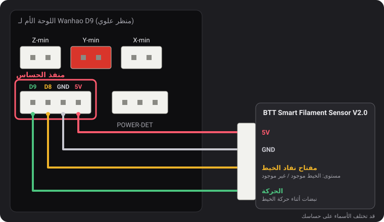
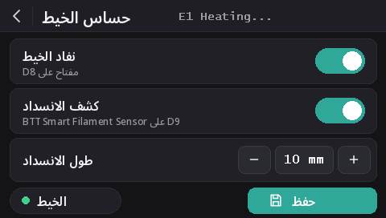

حساسات الخيط
منذ v2.0.5 تقرأ هذه البرامج الثابتة نوعين من الحساسات: مفتاح نفاد الخيط من Wanhao، و BTT Smart Filament Sensor V2.0 الذي يلاحظ أيضًا توقف الخيط عن الحركة (بكرة متشابكة، انسداد، خيط متآكل). اكتشاف نفاد الخيط مفعّل افتراضيًا في كل الطرازات، أما اكتشاف الانسداد فمعطّل.
منفذ الحساس

المنفذ ذو الأطراف الأربعة على يسار POWER-DET، أسفل منافذ مفاتيح نهاية المسار، يحمل D9 وD8 وGND و5V، بهذا الترتيب. أسماء الأطراف مأخوذة من مخطط توصيل من Wanhao عثر عليه dustovich وشاركه على Discord؛ والجهة الخلفية للوحة تطبع الأطراف الأربعة نفسها بالأسماء CTRL وBTN وGND وVCC.
- D8 هو مدخل نفاد الخيط الذي يقرؤه البرنامج الثابت من Wanhao نفسه.
- D9 لا يستخدمه البرنامج الثابت من Wanhao: تقرأ هذه النسخ عليه إشارة الحركة من حساس BTT.
على الشاشة
مع DGUS Reloaded 2.0 على الشاشة (البرنامج الثابت v2.0.9 أو أحدث): الإعدادات ← الخيط ← حساس الخيط.
- نفاد الخيط يفعّل كل أنواع الاكتشاف أو يعطّلها، مثل
M412 S1/M412 S0. - كشف الانسداد يفعّل اكتشاف الانسداد بالطول المحدد أدناه، أو يعطّله (
L0). - طول الانسداد: الزرّان − و+ يغيّرانه بمقدار 1 مم؛ المس الرقم لكتابته.
- تكون نقطة الخيط خضراء ما دام مفتاح نفاد الخيط يرى الخيط، وحمراء عندما لا يراه.
- تُطبَّق التغييرات فورًا. الزر حفظ يخزّنها، مثل
M500. سهم الرجوع يخرج من دون حفظ: تعود الإعدادات المخزّنة عند التشغيل التالي.

أوامر M412
يُضبط كل شيء عبر USB من طرفية تسلسلية (Pronterface، أو طرفية برنامج التقطيع أو OctoPrint،
بسرعة 250000 باود). يمكن جمع عدة معاملات في أمر واحد، مثل M412 S1 L10.
| الأمر | ما الذي يفعله |
|---|---|
M412 | يعرض الحالة، مثلًا Filament runout ON ; Distance 5.00mm ; Motion distance 0.00mm. |
M412 S1 | يفعّل الاكتشاف: مفتاح نفاد الخيط، واكتشاف الانسداد أيضًا إن لم يكن طول الانسداد 0. |
M412 S0 | يعطّل كل أنواع الاكتشاف، المفتاح والانسداد. |
M412 D5 | بعد أن يتوقف المفتاح عن رؤية الخيط، تستمر الطباعة 5 مم قبل الإيقاف المؤقت، لاستهلاك الخيط المتبقي بين الحساس والفوهة. القيمة الافتراضية 5 مم. |
M412 L10 | يفعّل اكتشاف الانسداد (لحساس BTT فقط): يوقف الطباعة مؤقتًا عندما تمر 10 مم من الخيط عبر الطارد (extruder) من دون أن تدور عجلة الحساس. |
M412 L0 | يعطّل اكتشاف الانسداد ويترك مفتاح نفاد الخيط على حاله. هذه هي القيمة الافتراضية. |
M500 | يحفظ الإعدادات. من دونه يضيع أي تغيير عند إطفاء الطابعة. |
M119 | يُظهر سطر filament القيمة TRIGGERED عند وجود الخيط، وopen عند غيابه. |
الأمر M412 L0، واستخدام L وحده، مصدرهما تعديلنا على Marlin
(MarlinFirmware/Marlin#28585)، وهو مدمج في هذه البرامج الثابتة. في Marlin من دون هذا التعديل، يُتجاهل L
وحده، ويوقف L0 الطباعة فورًا على أنها انسداد.
مفتاح نفاد الخيط من Wanhao
يُخبر البرنامج الثابت بوجود الخيط أو عدمه. عندما ينفد الخيط، تتوقف الطباعة مؤقتًا بعد 5 مم إضافية من الخيط وتبدأ الشاشة عملية تغيير الخيط.
وهو مفعّل افتراضيًا في كل الطرازات منذ v2.0.8. عندما لا يكون أي شيء موصولًا بـ D8، تُبقي مقاومة الرفع (pull-up) في اللوحة الطرف على 5 V، وهذا يُقرأ على أنه «الخيط موجود»: لذلك لا ينطلق الاكتشاف أبدًا، ويمكن تركه مفعّلًا سواء رُكّب حساس أم لا. صِل مفتاح نفاد الخيط بـ D8 وسيعمل فورًا.
- يبقى اكتشاف الانسداد معطّلًا (
L0): هذا المفتاح لا يستطيع رؤية حركة الخيط. - لتعطيل المفتاح:
M412 S0ثمM500. - الإعدادات المحفوظة بإصدار سابق تحتفظ بحالة التفعيل أو التعطيل. لتفعيله:
M412 S1ثمM500، أو أعد الإعدادات الافتراضية (M502ثمM500، وهذا يمسح أيضًا إزاحة Z للمجس وشبكة التسوية).
BTT Smart Filament Sensor V2.0
لهذا الحساس مخرجان، ويقرؤهما البرنامج الثابت بطريقتين مختلفتين:
- مفتاح نفاد الخيط (إلى D8) يعطي مستوى ثابتًا: 5 V ما دام الخيط موجودًا، و0 V بعد نفاده.
- مخرج الحركة (إلى D9) يأتي من عجلة صغيرة يُديرها الخيط أثناء مروره. كل بضعة مليمترات من الخيط، يتبدّل المخرج بين 0 V و5 V. لا يراقب البرنامج الثابت إلا هذه التبدّلات: فإذا دفع الطارد طولَ الانسداد من الخيط من دون أي تبدّل، فهذا يعني أن الخيط لا يتحرك (بكرة متشابكة، انسداد، خيط متآكل)، فتتوقف الطباعة مؤقتًا. مفتاح نفاد الخيط لا يستطيع رؤية ذلك: أثناء الانسداد يبقى الخيط موجودًا.
التوصيل
5V إلى 5V، وGND إلى GND، وإشارة مفتاح نفاد الخيط إلى D8 وإشارة الحركة إلى D9. قد تختلف الأسماء المطبوعة على كابل الحساس.
تفعيله
M412 S1 L10
M500إن توقفت الطباعة مؤقتًا بلا سبب، فارفع طول الانسداد: M412 L15 ثم M500. للإبقاء على
مفتاح نفاد الخيط وحده: M412 L0 ثم M500.
التحقق منه
M412: Filament runout ON ; Distance 5.00mm ; Motion distance 10.00mm.M119مع وجود الخيط: filament: TRIGGERED. إذا تغيّر هذا السطر عندما تدفع الخيط بيدك بدلًا من أن يتغير عند إدخاله أو إخراجه، فسلكا الإشارة معكوسان: بدّل بين D8 وD9.
L0 لا ينطلق
أبدًا)، لكن لم يُجرَّب بعد مع حساس BTT نفسه. إذا قُرئ المفتاح بالاتجاه المعكوس (open مع وجود
الخيط)، فأخبرنا على Discord.التحديث من v2.0.5 أو v2.0.6
لم يكن في هذين الإصدارين أي طريقة لتعطيل اكتشاف الانسداد، لذا استخدما طول انسداد أكبر من أن يُبلغ: 100 متر في
v2.0.5 (وهو في الواقع قصير جدًا: نحو ثلث بكرة وزنها 1 كغ، وبعده قد تتوقف طابعة تُركت مُشغَّلة مؤقتًا بلا سبب) و
10 كم في v2.0.6. عند تشغيل الطابعة، يحمّل v2.0.7 هاتين القيمتين على أنهما L0. أما الطول الحقيقي الذي ضبطته
لحساس BTT، مثل L10، فيُحتفظ به. وعند التحديث من v2.0.4 أو ما قبلها، تُحمَّل مسافة نفاد الخيط 5 مم
بدل القيمة 0 التي كانت تحفظها تلك الإصدارات.